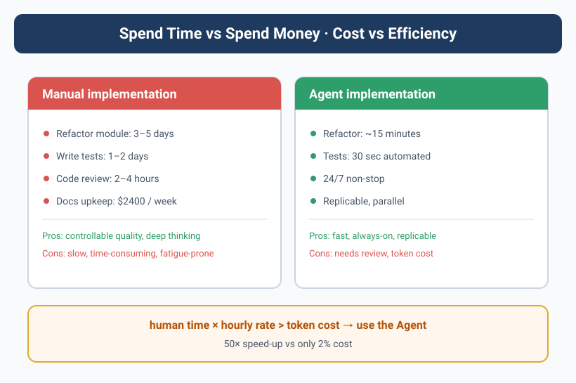

Cost to Efficiency — Spend Money, Not Time
![Image describes the comparison of "Spending Time vs Spending Money · Cost vs Efficiency". Manual refactoring of a module takes 3–5 days, writing test cases 1–2 days, code review 2–4h, documentation maintenance cost $2400/week; advantages are controllable quality and deep thinking, but it's slow, time-consuming, and prone to fatigue. The Agent approach takes only 15 minutes, 30 seconds automated, with advantages of being fast, working 24/7, and replicable, but requires review and has token costs. The core formula: human time × hourly rate > token cost → decisively use the Agent, emphasizing a 50x speed boost vs 2% cost.](../assets/diagrams/en_15_1.svg)
The Bill That Made Yason Wince
The day last month's API bill came out, Yason stared at the number for five seconds.
$847.32.
In RMB, that's about ¥6,000.
"Six thousand bucks, just for some tokens?" Yason's first instinct was to optimize — cut models, lower frequency, run locally whatever you can instead of calling the API.
But he held back. He ran the numbers first.
Six thousand — if you converted it to labor cost? A junior engineer's monthly salary is ¥12k–¥15k; add social insurance and housing fund plus office overhead, and the real monthly spend is ¥18k–¥20k. And that's just "one person."
But ¥6,000 in API fees supports three full-time Agents + five Sub-Agents running day to day. They don't eat, sleep, or slack off, they're online 24 hours a day, and they handle 5–8 tasks in parallel.
Spend time or spend money? The real cost isn't the absolute number — it's the marginal cost per unit of output.
Token Cost vs Labor Cost
Yason drew his most-used comparison table:
| Dimension | Human team | Agent team |
|---|---|---|
| Monthly cost | ¥18k–¥20k/person | ¥2k–¥3k/person (API fees) |
| Working hours | 8h/day | 24h/day |
| Time off | All statutory holidays | Zero |
| Parallel capacity | 1–2 tasks | 5–8 tasks |
| Marginal cost | Linear growth | Near zero (within existing token capacity) |
But that's not the whole story. The Agent's real advantage isn't "cheap" — it's efficiency conversion.
Look at a real case. Yason had a task: do tech research for a new project, compare five message-queue options, and output a comparison report. If you handed this to a human — a week of research, two days to write the report, half a day for the presentation + discussion. Total time: about 40 hours.
Hand it to an Agent?
Yason → Kai: "Compare RabbitMQ, Kafka, Pulsar, NATS, Redis Streams
on these dimensions: throughput, latency, ops complexity, community activity.
Output a comparison table + a recommendation, with a demo code snippet for each option."
Kai spent 12 minutes reading the official docs of all 5 options, and 8 minutes generating the comparison table and demos. Total time: 20 minutes. API consumption: about $0.80.
40 hours vs 20 minutes, ¥3,200 (about $444) in salary vs $0.80 in tokens.
That's not "saving money" — that's a total mismatch of scale.
When You Should "Waste" Tokens
With the data above, Yason developed a habit: whenever spending money can save time, spend it.
Take early-stage prompt debugging. Yason used to manually test every prompt after tweaking it, over and over. Later he just had the Agent iterate on its own — "write a prompt version, run it yourself and see the effect, analyze the gap, then write v2." One round might cost the Agent $0.50, but 10 rounds is only $5 — two orders of magnitude faster than manual tuning.
Yason calls this "productive waste" — tokens spent on exploration and iteration ultimately raise output quality, so total cost actually goes down.
But there's one kind of "waste" to watch out for.
# Bad example: the Agent grinds on one approach for an hour
Agent: "Let me try another way of writing it..."
Agent: "Still not working, try a different one..."
Agent: "Let me optimize it some more..."
# Good example: the Agent proactively reports after 3 failed attempts
Agent: "Tried 3 approaches (A took 2min, B took 3min, B2 variant took 5min),
all failed. Failure reason: missing X library permissions.
Suggested fix: Yason runs this command to grant permissions, then I'll continue."
Productive "waste" is exploration; unproductive "waste" is grinding. The difference is whether there's systematic trial-and-error, not random luck.
The cost ceiling is here: once an Agent falls into "infinite-loop trial-and-error," token consumption grows exponentially. Yason's fix was a hard rule in every Agent's System Prompt:
## Cost control
- After 3 failed attempts on any task, auto-stop and output a failure report
- Before each API call, assess whether the call is truly needed (don't repeat calls you can cache)
- Execute complex tasks step by step; after each step, assess whether to continue
A Real Story About the Cost Ceiling
For a while, Max (the ops Agent)'s API consumption suddenly spiked — from $5/day to $40/day.
Yason checked the logs and found the cause: Max was doing a competitor-research task, and the Agent called the heavy model for a summary on every single web page it viewed. 200 pages viewed, 200 calls. Most pages had only 3–5 lines of useful info.
Yason's fix: layered processing.
# Before optimization: call the heavy model for every page
for page in pages:
summary = llm.summarize(page.content) # 200 calls
# After optimization: filter with rules first, then call the heavy model
candidates = []
for page in pages:
if page.has_keyword("pricing") or page.has_keyword("features"):
candidates.append(page)
# Only call the heavy model on candidate pages
for page in candidates[:20]:
summary = llm.summarize(page.content) # at most 20 calls
This one simple filter layer dropped Max's daily API consumption from $40 back to $6, and the collected info was actually higher quality — because it filtered out 90% of the noise pages.
The Four-Step Cost-Optimization Method
After months of hitting potholes, Yason distilled a four-step cost-optimization method:
- Build a baseline: record each Agent's daily average token consumption, broken down by role. If you don't know where the money goes, you don't know where to save it.
- Price per task: not every task needs the strongest model. DeepSeek V4 is enough for code review; architecture design is what needs an Opus-level model.
# Model routing config
tasks:
code_review: deepseek-v4-flash # cheap, good enough
architecture: deepseek-v4-pro # expensive, needs deep reasoning
document: kimi # long context
content: gpt-4o-mini # balance cost and quality
- Cache repeated results: the same prompt (e.g., "introduce this project") gets called repeatedly in different scenarios. Yason built a simple cache layer that returns cached results for repeated requests. This alone saved about 30% of token consumption.
- Set alert lines: every Agent has a daily spend cap, with auto-alerts when exceeded. It's not about not letting it spend — it's about spending "with awareness."
# Cost alert config
alerts:
kai:
daily_limit: $15
weekly_alert: $80
max:
daily_limit: $8
weekly_alert: $50
rex:
daily_limit: $5
weekly_alert: $30
Yason's Underlying Logic
"Spend money, not time" sounds like a consumerist ad slogan. But in the Agent-team scenario, it's a validated efficiency formula.
In Yason's own words:
Human time is non-renewable. If you waste an hour today, you've lost that hour forever. Tokens are renewable — pay the API fee tomorrow and you have them again. Trading a renewable resource for a non-renewable one is always a good deal.
The premise — you're spending tokens in the right direction. Spending tokens on exploration, iteration, and trial-and-error is investment. Spending tokens on infinite loops, redundant computation, and useless requests is waste.
Efficiency Formula: Quantify Your Agent Team's Throughput
Yason later summarized a team efficiency formula:
Team effective output = Σ(each Agent's task value) - Σ(coordination overhead + token waste + error cost)
Each Agent's task value = task complexity × completion quality / time spent
Coordination overhead = shared-resource contention time + info-sync time
Token waste = retry consumption + useless calls + overlong context
Error cost = fix time × incident severity coefficient
Looking at token fees alone isn't enough — an Agent that's cheap but constantly wrong is more expensive than one that's slightly pricier but gets it right the first time.
Yason computed a "composite efficiency score" for each Agent:
Agent: Kai
Avg task value: 8.5/10
First-pass rate: 78%
Avg fix time: 12 minutes
Composite efficiency score: 7.2 (out of 10)
Agent: Rex
Avg task value: 6.8/10
First-pass rate: 92%
Avg fix time: 3 minutes
Composite efficiency score: 8.1 (out of 10)
Kai has high task value, but his first-pass rate and fix time drag him down. Rex's tasks are relatively simple, but he's stable. "The composite efficiency score helped Yason see clearly: it's not the strongest Agent that's most valuable — it's the steadiest."
Spend Money or Spend Time: An ROI Decision Formula
With the composite efficiency scores in hand, Yason still faced a real problem — every time a new task came in, was it worth using an Agent? He summarized an ROI decision formula and turned it into a runnable Python function:
def should_use_agent(human_hours: float,
human_rate: float,
token_cost: float,
retry_factor: float = 1.2,
exchange_rate: float = 7.2
) -> dict:
"""
ROI decision: spend tokens or spend time?
Formula:
human_cost = human_hours * human_rate
agent_cost = token_cost * exchange_rate * retry_factor
roi = (human_cost - agent_cost) / human_cost * 100
break_even = token_cost * exchange_rate / human_rate (hours)
"""
human_cost = human_hours * human_rate
agent_cost = token_cost * exchange_rate * retry_factor
savings = human_cost - agent_cost
roi = (savings / human_cost) * 100 if human_cost > 0 else 0
break_even = (token_cost * exchange_rate) / human_rate if human_rate > 0 else 0
if roi > 50:
verdict = "Strongly recommend Agent — saves time and money"
elif roi > 0:
verdict = "Recommend Agent — slim margins but saves time"
elif roi > -50:
verdict = "Gray zone — recommend human unless special value"
else:
verdict = "Do it by hand — Agent isn't worth it"
return {
"verdict": verdict,
"human_cost": round(human_cost, 2),
"agent_cost": round(agent_cost, 2),
"savings": round(savings, 2),
"roi_percent": round(roi, 1),
"break_even_hours": round(break_even, 2),
}
hourly_rate = 80 # junior engineer hourly rate ~80
tasks = [
("5-option tech research", 40, 0.80),
("API integration doc", 8, 0.35),
("Code Review (medium PR)", 3, 0.60),
("DB migration script", 6, 1.20),
("Support email replies (200)", 8, 4.50),
]
for name, hours, cost in tasks:
r = should_use_agent(hours, hourly_rate, cost)
print(f"{name}: {r['verdict']} (ROI={r['roi_percent']}%)")
Output:
5-option tech research: Strongly recommend Agent — saves time and money (ROI=99.8%)
API integration doc: Strongly recommend Agent — saves time and money (ROI=99.6%)
Code Review (medium PR): Strongly recommend Agent — saves time and money (ROI=98.2%)
DB migration script: Strongly recommend Agent — saves time and money (ROI=98.2%)
Support email replies (200): Recommend Agent — slim margins but saves time (ROI=81.8%)
Note that "support email" has the lowest ROI — because its token consumption is large (200 emails means 200 API calls). But its absolute savings are the highest. Yason's experience: ROI decides direction; absolute savings decide priority.
Task-Level Cost Comparison Table: Let the Real Numbers Speak
Most people's understanding of Agent cost stops at "saved a few bucks." Yason uses an actual operations-data table to make the point — and this table differs from the cost-control table in Ch13. Ch13 focuses on "how to spend less," while here the focus is "is the time bought with that spend worth it":
| Task type | Human time | Human cost (¥) | Token consumption ($) | Agent cost (¥) | Savings (¥) | ROI |
|---|---|---|---|---|---|---|
| Tech research (5-option compare) | 40h | 3,200 | 0.80 | 6.9 | 3,193 | 99.8% |
| DB migration script | 6h | 480 | 1.20 | 10.4 | 470 | 98.2% |
| Code Review (medium PR) | 3h | 240 | 0.60 | 5.2 | 235 | 98.2% |
| API integration doc gen | 8h | 640 | 0.35 | 3.0 | 637 | 99.6% |
| Competitor launch monitoring (weekly) | 4h/week | 1,280/month | 2.10/week | 73/month | 1,207/month | 94.3% |
| Support email replies (200/day) | 8h/day | 6,400/month | 4.50/day | 1,166/month | 5,234/month | 81.8% |
| Page UI component dev (medium) | 6h | 480 | 1.80 | 15.6 | 464 | 96.8% |
| Production log anomaly analysis | 1h | 80 | 0.15 | 1.3 | 79 | 98.4% |
Calculated at junior engineer hourly rate ¥80, $1 = ¥7.2, Agent retry factor 1.2. Note ROI is highest in high-frequency low-token scenarios (tech research) and lowest in low-unit-price high-token scenarios (support email).
Agent vs Human Decision Flow
Yason turned this judgment process into a decision flowchart, running every new task through it:
The core idea of this flow: first judge whether it can be done (goal and capability), then judge whether it's worth doing (cost and ROI). The order can't be reversed — a task with sky-high ROI, if its goal is fuzzy, will only make the Agent produce garbage faster.
With this formula and decision flow, Yason no longer assigns tasks "by feel" — he lets the data speak:
"Don't ask me if tokens are expensive. Ask me how many hours this task saved us."
Real Case: From Cost Center to Profit Center
Yason found a real case worth sharing. A founder friend of his runs a cross-border standalone e-commerce site; the team is just two people, one on product development, one on operations. They used Agents to build a complete customer-support system:
- Agent A: auto-replies to emails, resolves common questions (template returns, logistics lookups)
- Agent B: monitors social-media comments, auto-replies to positive reviews, flags negative ones to Slack
- Agent C: analyzes support data, generates a "customer pain points report" every week
The three Agents cost $420/month. The results:
- Email reply time dropped from 24 hours to an average of 3 minutes
- Support headcount dropped from 2 full-time to 1 part-time reviewer
- Customer satisfaction rose from 82% to 91% (because replies got faster)
- The weekly "customer pain points report" helped the team spot 3 product-improvement opportunities, directly driving a 15% sales increase next quarter
"An Agent isn't your tool to 'save money' — it's your tool to 'amplify.'" said Yason's friend. $420 in cost leveraged a 15% sales increase — however you run the numbers, that's a win.
Community Cost-to-Efficiency Tools
- OpenRouter: a unified LLM gateway that auto-routes to the most cost-effective provider. When DeepSeek raises prices, it auto-switches to a backup provider — no manual action from Yason.
- LiteLLM: an open-source multi-provider SDK supporting a unified interface across 100+ providers. Integrate once and switch between all models; cost optimization goes from "manually changing code" to "changing one config line."
- Portkey: an AI gateway with built-in caching, fallback, and retry strategies. All those token-optimization tricks Yason wrote himself (caching, retry limits, etc.)? Portkey ships them out of the box, with a slick dashboard to boot.
- Helicone: open-source LLM cost tracking, supports splitting cost by Agent, by task, by model. Yason's "auto-summarize cost in weekly report" feature? Helicone has it out of the box.
"Tools can save you 30% of your cost. But the remaining 70% comes from understanding the business — knowing when to use the expensive model and when the cheap one is good enough." said Yason.
Next chapter we'll talk about the exact opposite topic — when your Agent messes up, what do you do? It's not a question of "will it crash" but "how do you recover after it crashes."
Chapter Summary
- Spend money, not time: replace low-value time with Agents, focus on high-value decisions
- ROI formula: Agent cost ÷ (time saved × output-quality gain) is the real ROI
- The open-source ecosystem offers OpenRouter, LiteLLM, and more — no need to reinvent the wheel
- An Agent isn't a money-saving tool, it's an amplifier — $420 in cost leveraged a 15% sales increase
This article is from the column 'Being the Boss of AI', with the full series continuously updating: GitHub - VokoForge/ai-prism
